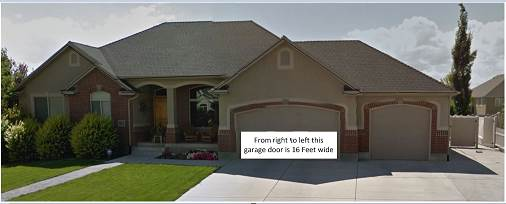
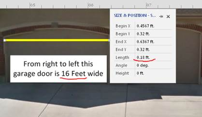
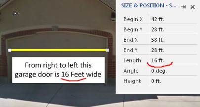
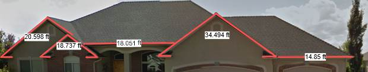
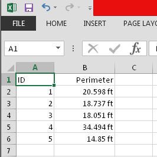

I was once asked to make an instrument for a Christmas Lighting company. They place Christmas lights along the roof of the house. And they need to have a way to quickly calculate the amount of materials they need (garland length).
It would be convenient to do this from a photograph at home. If you insert a photo in Visio and draw the necessary garlands in it in the form of a polyline on it, then Visio can calculate the length using the LengthIU function. But for success, you need to correctly set the scale of the document and the size of the photo. And this operation seemed unnecessarily complicated for the low-skilled personnel of the company.
At this point, the idea of automatically scaling a document arose, which was subsequently implemented as a special Visio document template. The idea is that the photo is imported without scaling. Then two points with a known distance between them are marked and based on these data, the macro automatically adjusts the scale of the document and the size of the image for convenient operation.
Then you can work with regular Visio tools, but for more convenient work, a macro was added to add length-value to the text of lines and a macro to make the report.
I have given some pictures illustrating the work with the new template.
This is the original image imported into Visio.

The employee measured the width of the garage door. It is equal to 16 ft. But without scaling, Visio shows a value of 0.18 ft.

After I placed the “Gauge” master on the garage door and executed the “Prepare” macro, Visio started showing the correct value.

Now draw a line around the places where the garlands should be and execute the "Calculate" macro. The macro adds the dimensions of the polylines to the drawing. The values correspond to the correct scale.

The macro "Report" displays the results of measurements in Excel in the form of a table.

Even a low-skilled employee can use such a template. Only the simplest operations are used, such as importing a picture, drawing lines, calling up a macro through the context menu.